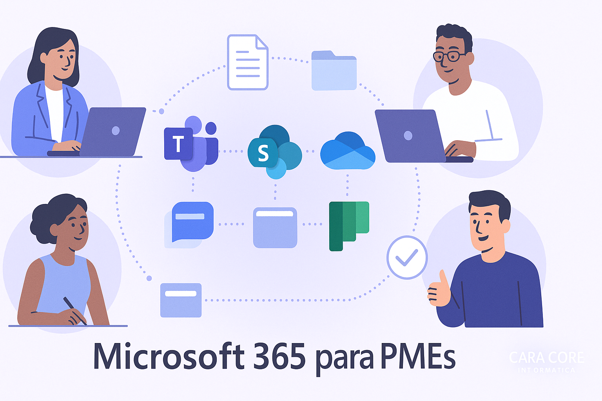

Microsoft 365 para PMEs: colaboração simples, resultados reais
A história: “Três lojas, muitas conversasâ€
A rede de lojas “Ponto do Bairro†começou com uma unidade, depois três, e o time passou a trabalhar parte do tempo em casa e nas ruas. Cada filial tinha seu “jeitinhoâ€: o estoque numa planilha, as fotos de produtos no celular, as cotações no e-mail pessoal.
O problema não era falta de esforço. Era a falta de um lugar único para conversar, guardar, encontrar e aprovar. O plano: investir 2% do lucro de um mês para padronizar o básico com Microsoft 365.
Resultados em 30 dias:
- Conversas e reuniões no Teams, com canais por assunto.
- Documentos no SharePoint/OneDrive, com controle de versão e pesquisa.
- Tarefas no Planner, com responsáveis e prazos visÃveis.
- Aprovações e avisos automáticos via Power Automate.
O kit inicial (em 7 dias) — o que montar primeiro
- DomÃnio e usuários: cada pessoa com e-mail corporativo e MFA.
- Teams: um time por área (Vendas, Compras, Operações) com canais fixos.
- SharePoint: sites por área e uma “central†(intranet) com documentos oficiais.
- OneDrive: arquivos pessoais de trabalho, com compartilhamento por link seguro.
- Planner: quadro por área; tarefas com checklists e comentários.
- Power Automate: aprovações simples (compras, descontos) e avisos no Teams.
- Forms/Bookings: formulários e agendamentos para clientes e equipe.
Exemplos práticos que geram valor imediato
- Catálogo e preço sempre atualizados: PDF no SharePoint; link compartilhado só para a equipe. Atualizou o arquivo, todos têm a versão certa.
- Pedido especial do cliente: formulário (Forms) preenche planilha no SharePoint e aciona aprovação no Teams.
- Compras com aprovação: o gerente recebe notificação, aprova pelo celular, o fornecedor já é avisado.
- Visita técnica: fotos e relatório direto no canal do Teams; o arquivo vai para a biblioteca do SharePoint automaticamente.
- Onboarding de novos colaboradores: página “Comece aqui†no SharePoint (+ checklists no Planner).
- Reunião que vira ação: notas no OneNote/Loop e tarefas no Planner com responsáveis em 1 clique.
Casos reais com números de ROI
Estes exemplos são conservadores e servem para visualizar a ordem de grandeza do ganho.
Catálogo e preços centralizados
Antes: 10 vendedores × 15 min/dia procurando a versão certa = 2,5 h/dia.
Custo: (R$ 45/h) ~R$ 112,50/dia → ~R$ 2.475/mês (22 dias úteis).
Depois: 10 × 5 min/dia = 0,83 h/dia → ~R$ 37,35/dia → ~R$ 822/mês.
Economia: ~R$ 1.653/mês.
Compras com aprovação no celular (Power Automate + Teams)
Antes: ~6 h/semana somadas de espera e retrabalho (três pessoas envolvidas).
Custo: 6 × R$ 45 = R$ 270/semana → ~R$ 1.161/mês (4,3 semanas).
Depois: ~2 h/semana → ~R$ 90/semana → ~R$ 387/mês.
Economia: ~R$ 774/mês. Payback tÃpico: < 1 mês considerando licenças básicas.
Onboarding de novos colaboradores
Antes: ~8 h para organizar acessos e materiais.
Depois: (página “Comece aqui†+ modelos): ~4 h.
Economia: 4 h por contratação. Em 3 contratações/trim: 12 h/trim. Valor: 12 × R$ 45 = R$ 540/trim (~R$ 180/mês).
Segurança e governança, sem complicar
- MFA (dupla verificação) ativada para todos.
- Compartilhamento padrão: “Somente pessoas da organizaçãoâ€. Externo apenas quando necessário e com prazo.
- Pastas oficiais em sites de área (SharePoint). Evite “salvar no desktopâ€.
- PolÃticas simples de retenção e acesso; evite grupos “soltos†sem dono.
Custos, licenças e ROI
- Licença por usuário (planos Business) — comece pelo básico e evolua conforme a necessidade.
- O ganho vem da velocidade: menos tempo procurando arquivos, menos retrabalho, decisões mais rápidas.
- Dica: escolha 3 fluxos crÃticos (ex.: compras, catálogo, propostas) e meça o antes/depois.
Antes vs Depois (rápido para compartilhar)
| Cenário | Antes | Depois | Ganho tÃpico |
|---|---|---|---|
| Catálogo e preços | 10 vendedores × 15 min/dia = 2,5 h/dia | 10 × 5 min/dia = 0,83 h/dia | ~1,7 h/dia a menos (≈ R$ 1.653/mês) |
| Aprovação de compras | ~6 h/semana somadas (espera + retrabalho) | ~2 h/semana | ~4 h/semana a menos (≈ R$ 774/mês) |
| Onboarding | ~8 h por contratação | ~4 h por contratação | 4 h por contratação (≈ R$ 540/trim para 3 admissões) |
Obs.: números ilustrativos e conservadores; adapte às horas e custo/hora da sua equipe.
Como começar esta semana
- Nomeie um(a) dono(a) por área (Vendas, Compras, Operações).
- Crie a estrutura mÃnima no Teams e SharePoint, com 4–6 canais essenciais.
- Centralize documentos oficiais (modelos, polÃticas, listas de preço).
- Configure 1 aprovação simples no Power Automate.
- Treine a equipe em 90 minutos: “onde conversamosâ€, “onde guardamosâ€, “como aprovamosâ€.
Se preferir, a Cara Core ajuda com um sprint guiado, treinamento e suporte agendado.
Conclusão
Investir uma fração do lucro em organização digital com Microsoft 365 não é gasto — é aceleração operacional. Ao padronizar “onde conversamosâ€, “onde guardamos†e “como aprovamosâ€, o negócio ganha previsibilidade, rapidez e menos retrabalho.
Próximo passo → agende um bate-papo. A Cara Core Informática oferece suporte com atendimento agendado e treinamentos sob encomenda aos Sábados, Domingos e Feriados.
Dicionário rápido
- Teams
- Conversas, reuniões e canais por assunto.
- SharePoint
- Sites e bibliotecas para documentos oficiais da área.
- OneDrive
- Arquivos pessoais de trabalho com compartilhamento seguro.
- Planner
- Tarefas com responsáveis, prazos e checklists.
- Power Automate
- Automações (avisos, aprovações, cópias) sem programar.
- Forms
- Formulários para clientes/equipe; respostas vão para planilha.
- Bookings
- Agenda online para serviços e atendimentos.
- OneNote/Loop
- Anotações e páginas colaborativas em tempo real.
- MFA
- Autenticação em duas etapas; muito mais segurança.
Hashtags
Contato
- E-mail: suporte@caracore.com.br
- Site: www.caracore.com.br
- LinkedIn: Cara Core Informática
Conecte-se conosco no LinkedIn para mais conteúdos sobre produtividade e colaboração!
Seguir no LinkedIn